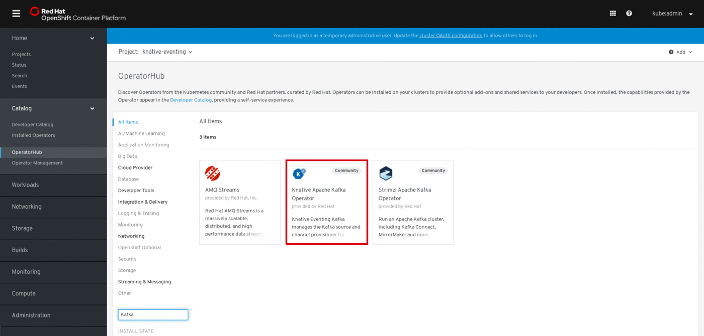
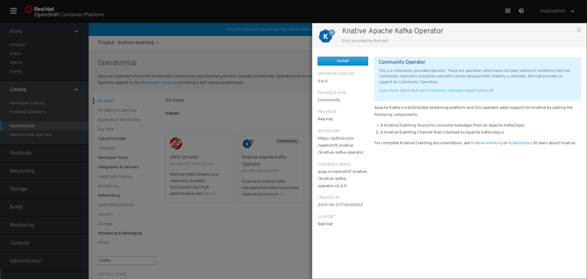
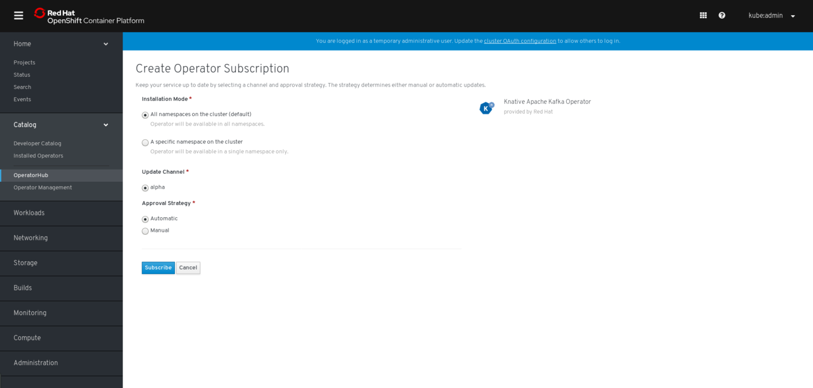
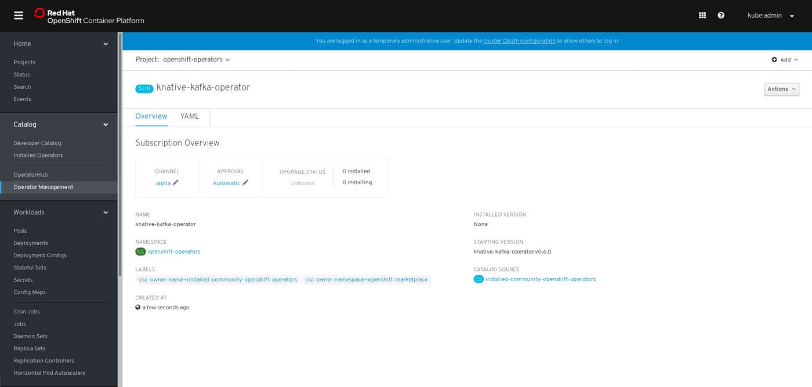
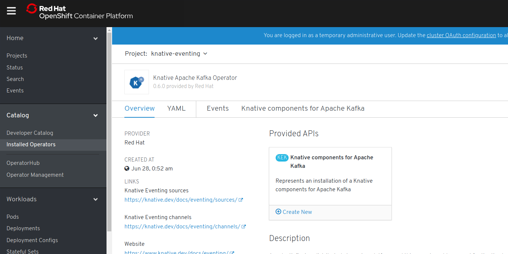
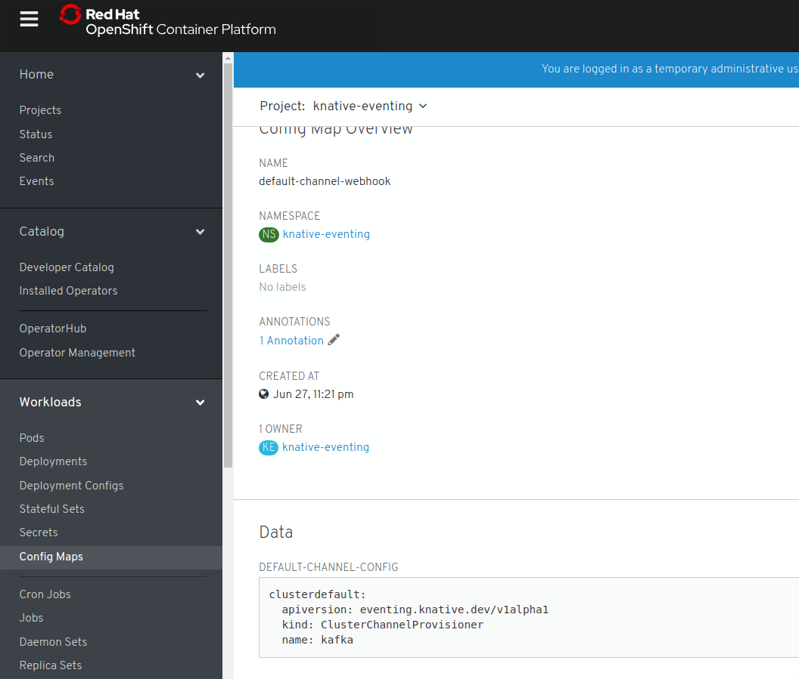

Knative Apache Kafka Operator
Serverless integration is possible with Knative and Apache Kafka on OpenShift Container Platform. This guide walks cluster administrators through installing the Knative Apache Kafka Operator in an OpenShift Container Platform cluster. As a cluster administrator, you can install the operator from the OperatorHub using the OpenShift Container Platform web console.
Prerequisites
-
Knative Eventing is installed
-
A running instance of Apache Kafka
Release Notes
With the release of the version 0.15.0 the API of the KafkaSource changed. The bootstrapServers and topics fields are now an array and the consumerGroup is optional. Here is an example:
apiVersion: sources.knative.dev/v1alpha1
kind: KafkaSource
metadata:
name: kafka-source
spec:
bootstrapServers:
- my-cluster-kafka-bootstrap.my-kafka-namespace:9092
topics:
- my-topic
sink:
ref:
apiVersion: serving.knative.dev/v1
kind: Service
name: event-displayInstalling the Knative Apache Kafka Operator
-
Select the
knative-eventingproject by clicking on Projects > Create Project in the web console.
-
Go to Catalog > OperatorHub. A list of operators for OpenShift, provided by Red Hat as well as a community of partners and open-source projects is available. Use the Filter by Keyword box to facilitate the search of the Knative Apache Kafka Operator in the catalog.
-
Click on the Knative Apache Kafka tile.
 -
A
Show Community Operatordialog box will appear. Click Continue to proceed. -
The Knative Apache Kafka Operator descriptor screen will appear. Click Install.
 -
On the Create the Operator Subscription screen
-
Go to the Installation Mode section and choose the default selection.
-
Click Subscribe.
The Knative Apache Kafka Operator does not auto-install all components. Clicking Subscribe only installs the Knative Apache Kafka Operator. Manual installation is required to configure the editor, so that all components are installed.
-
-
Confirm the subscription for the installation operator, by viewing the Subscription Overview. Observe as the UPGRADE STATUS goes for
0 Installingto1 Installed. -
Click the
1 Installedlink. -
Click Create New to install the
Knative Apache KafkaAPI. -
In the Custom Resource (CR) dialog
-
Configure the Kafka channel as the default
-
Provide the URL to your Kafka instance.
-
Click Create to set the value.

The editor is pre-populated with definitions. Configure the file by manually entering YAML or JSON definitions, or by dragging and dropping a file into the editor. During installation, you can set the Kafka Channel as the default channel by using Custom Resources.
-
-
After some time, three Kafka pods in the Knative Apache Kafka namespace will be listed - two for the channel, one for the source.
-
See the updated Config Maps, which reflect the Kafka channel configured as the default.
When the channel is configured as the default, each new channel that is created will be a Kafka Channel, which is then backed by a Kafka Topic. 
Uninstalling the Knative Apache Kafka Operator
-
Go to Catalog > OperatorHub
-
Click on the Knative Apache Kafka Operator tile.
The operator tile will indicate it is installed. 
-
Click Uninstall on the Knative Apache Kafka Operator descriptor screen.
-
In the Remove Operator Subscription dialog box
-
Select Also completely remove the Operator from the selected namespace
-
Click Remove. The Apache Kafka Operator subscription is now removed.
-